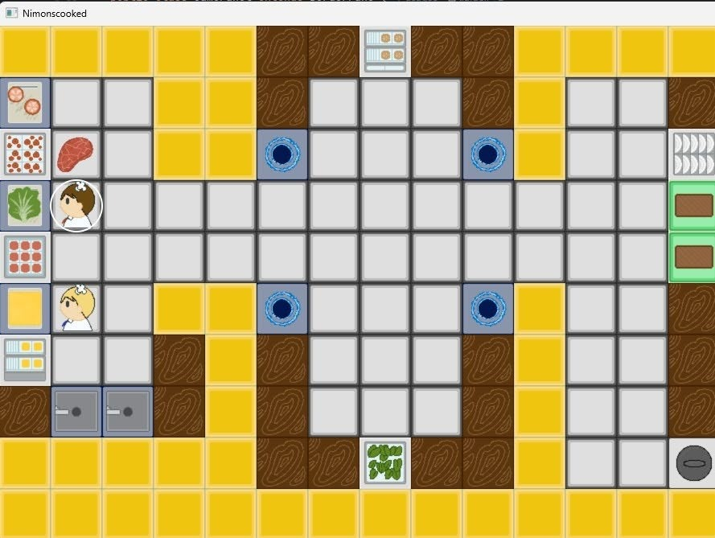

NimonsCooked — OOP Game
An Overcooked-inspired cooking simulation game built as a team project for Object-Oriented Programming (IF2040). Features chef characters, item management, map systems, and a game engine — all structured with MVC architecture.
View on GitHub →